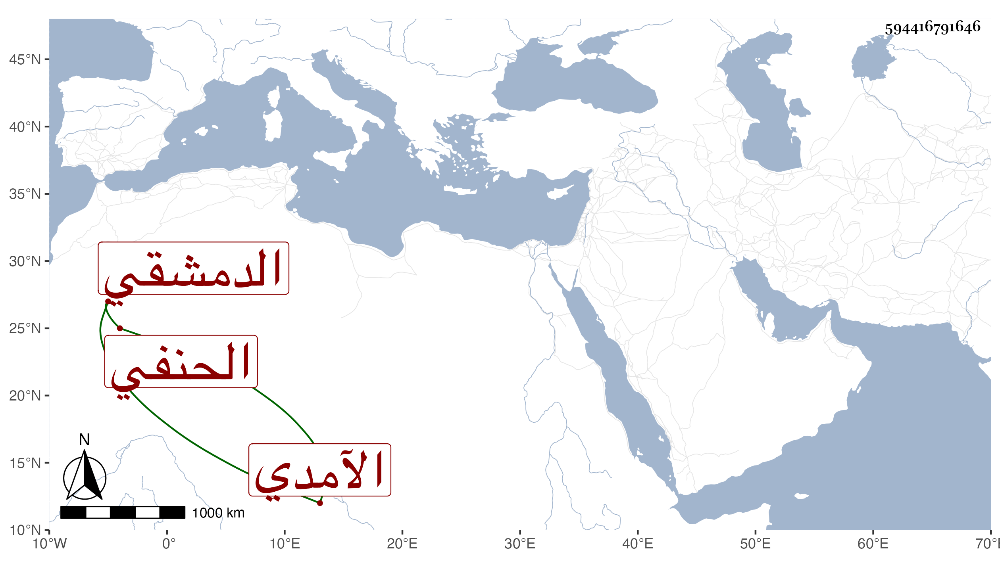

0902Sakhawi.DawLamic.ITO20230111-ara1.EIS1600.594416791646
Biography ID: 594416791646
136
عبد الرحمن بن إبراهيم بن العفيف اسحاق بن يحيى بن إسحاق بن إبراهيم ابن إسماعيل الصلاح بن الفخر الآمدي الدمشقي الحنفي ويعرف بابن العفيف . سمع من عمر بن عثمان بن سالم بن خلف مآخذ العلم لابن فارس ولقيه الحافظ ابن موسى وشيخنا الموفق الأبي في سنة خمس عشرة فحملاه عنه وهو من بيت حديث روى لنا عن أبيه بعض شيوخنا وجده مسند شهير .
